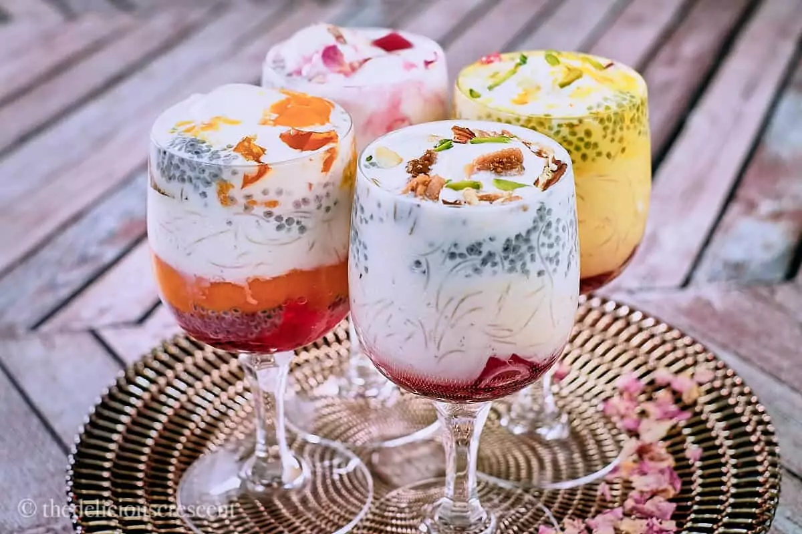

FALUDA

Description
Faluda is a rich and refreshing dessert
drink that originated in the Indian
subcontinent and is especially popular
in South Asia.
Beyond its taste, faluda is also a
cultural symbol of celebration and
indulgence. It is commonly enjoyed
during hot summers, festive occasions,
or after a hearty meal, offering a
perfect balance of sweetness and
coolness. Different regions add
their own twist—some include kulfi
instead of regular ice cream, while
others add jellies, fruits, or saffron
milk for extra richness. This
versatility makes faluda not just a
dessert but an experience, blending
flavors and textures in a way that
is both comforting and luxurious.
Ingredients
- Milk (chilled, sometimes flavored with cardamom or saffron)
- Faluda sev (thin vermicelli noodles, usually made from cornstarch)
- Sabja seeds (sweet basil seeds, soaked in water until they swell)
- Rose syrup (or other flavored syrups like khus or mango)
- Sugar (optional, depending on sweetness preference)
- Ice cream (usually vanilla or kulfi for a richer version)
- Jelly or fruit chunks (optional, for added texture and flavor)
- Chopped nuts (like pistachios, almonds, or cashews, for garnish)
- Cherries or dried fruits (optional topping for decoration)
Steps
- Soak the basil seeds– Take 1–2 teaspoons of sabja (basil) seeds, rinse them, and soak in water for about 15 minutes until they swell up. Drain and set aside.
- Cook the faluda sev (vermicelli)– Boil water in a small pot, add faluda sev (or substitute with very thin vermicelli), and cook until soft. Drain, rinse with cold water, and set aside.
- Prepare the milk– Chill 1 cup of milk (you may sweeten it with sugar or flavor with a little cardamom powder or saffron if you like).
- Layer the ingredients– In a tall glass, add 1–2 tablespoons of rose syrup at the bottom.
- Add the soaked basil seeds– Spoon in a layer of the swollen sabja seeds.
- Add vermicelli– Place a layer of the cooked sev on top of the seeds.
- Pour the milk– Slowly pour chilled milk into the glass so it blends but still shows layers.
- Top with ice cream– Add a scoop of vanilla ice cream (or kulfi for the traditional version).
- Garnish– Sprinkle chopped nuts, dried fruits, or add jelly pieces, then finish with a cherry on top.
- Serve immediately- Use a long spoon or straw and enjoy while cold.
Home